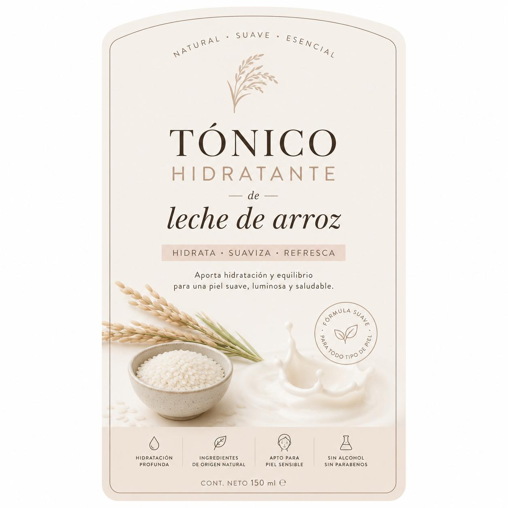

🍲
Alimentación
Restaurantes, cafeterías, productos artesanales, repostería y alimentos innovadores.
Una mirada a los diferentes tipos de emprendimientos que existen en nuestro país y a una propuesta innovadora: un tónico hidratante de leche de arroz.
Conocer el proyecto ↓
En Ecuador existen emprendimientos de diferentes áreas. Cada uno puede responder a una necesidad, generar empleo y aportar al desarrollo de la comunidad.
Restaurantes, cafeterías, productos artesanales, repostería y alimentos innovadores.
Venta de ropa, accesorios, productos para el hogar y negocios que funcionan de forma física u online.
Aplicaciones, servicios digitales, tiendas virtuales y soluciones tecnológicas para diferentes necesidades.
Productos elaborados de manera artesanal que buscan aprovechar recursos y reducir desperdicios.
Productos de cuidado personal, higiene y bienestar elaborados con ingredientes de origen natural.
Negocios que ofrecen conocimientos o soluciones: diseño, educación, transporte, reparación y más.
Nuestra propuesta innovadora es un tónico hidratante inspirado en las propiedades cosméticas de la leche de arroz. Está pensado como un producto de cuidado personal con una presentación natural, suave y moderna.
El proyecto combina creatividad, investigación y una necesidad del mercado para desarrollar una propuesta de producto.
Identificamos una oportunidad en el cuidado personal.
Analizamos ingredientes, presentación y posibles consumidores.
Diseñamos el concepto del tónico hidratante de leche de arroz.
Convertimos la idea en una propuesta con identidad y posibilidad comercial.
Porque transforma una idea basada en un ingrediente conocido, como el arroz, en una propuesta de cuidado personal con una identidad visual propia. El objetivo es demostrar que una idea sencilla puede convertirse en una oportunidad de emprendimiento mediante creatividad e innovación.
Los emprendimientos ecuatorianos son una fuente de creatividad, trabajo y desarrollo. Con este proyecto mostramos diferentes áreas de emprendimiento y destacamos el tónico hidratante de leche de arroz como una propuesta innovadora desarrollada dentro del proyecto STEAM.